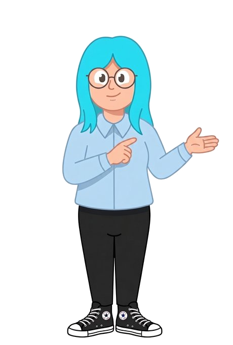

Vamos praticar inglês ouvindo e lendo frases do dia a dia. Alguns exercícios eu falo em voz alta, outros você lê — e em alguns você escreve a resposta. Bora começar?
Essa atividade é uma versão beta — se algo ficar estranho ou faltar frase, me avise que eu ajusto.